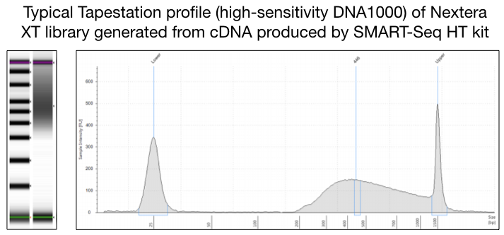

Day 1
Documentation
Clontech ‘SMART Seq HT’ for High-throughput single-cell mRNA-seq. This is an excellent kit for preparing cDNA very low amounts of RNA (as little as 1-100 cells). This kit is analgous to the well-known Clontech SMART-v4 kit, but is a faster/abbreviated workflow which combines RT/PCR steps and is roughly 30% lower cost compared to SMART-V4.
The protocol below uses the SMART Seq HT kit, however another option for cDNA generation when starting with low-input is the Clontech Pico v2 kit. This has a few important difference from the SMART Seq HT kit above. First, it uses random hexamer priming, rather than polyT, to make cDNA. This means that it works very well when your starting material is highly degraded (e.g. fixed cells or tissues). The random priming also means that this kit amplifies cDNA from all transcripts, including highly abundant RNA molecules such as rRNAs. We tend to use this kit if 1) investigators are working with highly degraded starting material, particularly FFPE tissues, or 2) if they really prefer to study total transcriptomes, rather than mRNAs.
What you’ll need
- 10x Lysis buffer
- RNase inhibitor (40U/ul)
- SeqAmp DNA Polymerase
- One-step Buffer
- SMART-Seq HT Oligonucleotide
- 3’ SMART-Seq CDS Primer II A
- SMARTScribe Reverse Transcriptase (100 U/µl)
- Nuclease-Free Water
- Elution Buffer (10 mM Tris-Cl, pH 8.5)
A few important comments before you start
- You’ll split this protocol into two days: day 1 will be your sort and cell lysis, day 2 will be RNA isolation and/or cDNA generation, and a modified NexteraXT library prep.
- Use only filter pipette tips and clean your area so it is free of RNases.
- Certain steps, such as 1st-strand cDNA synthesis must be carried out in a PCR clean hood
- Be sure to include the kit positive control and a water-only negative control with each experiment.
- the SMART-Seq HT kit uses a 96-well plate for mixing reactions. Do not use tubes.
- Similar to other Clontech low-input kits, SMART-Seq HT uses a template switching method to produce abundant cDNA directly from as few as 1-100 cells or from 10pg-1ng of total RNA.
- This protocol is very sensitive to variations in volume and other factors. Please make sure the pipettes are calibrated and avoid contamination.
Day 1: Sample preparation
OPTION A: starting with cells
- Prepare 10x reaction buffer from the SMART-Seq HT kit by mixing 19 uL of 10x Lysis Buffer with 1 uL of RNase inhibitor. This is enough for ~20 samples. Scale up as needed, but be sure to maintain 19:1 ratio of lysis buffer to RNase inhibitor
-
Prepare 1x reaction buffer by mixing 9.5 uL nuclease-free water with 1 uL of 10x reaction buffer. This is enough to sort one sample, so be sure to scale up as needed.
-
Add 5ul of 1x reaction buffer to collection eppendorf tube and sort directly into this tube.
-
Immediately after sample is sorted, add an additional 5.5 uL of 1x reaction buffer to tube.
-
Store at -80C until ready to begin cDNA synthesis. You can proceed directly from this cell lysate to cDNA preparation with no intermediate RNA isolation step.
OPTION B: staring with purified RNA
-
If you have 1000’s or 10’s of thousands of cells, it probably makes sense to isolate RNA first and then use the same amount of total RNA for the cDNA reaction. We recommend using a kit specifically designed for efficient recovery of RNA from low numbers of cells, and have had success with the ARCTURUS PicoPure RNA isolation kit and the Qiagen RNeasy micro kit
-
If using the Qiagen kit, sort directly into Buffer RLT and follow the protocol included with the kit.
-
Store RNA at -80C until ready for library prep.
Day 2: cDNA and library prep
Clontech SMART-Seq cDNA Synthesis
-
Thaw One-step buffer at room temperature, thaw enzymes (SeqAmp DNA Polymerase and SMARTScribe Reverse Transcriptase) at room temperature then keep tubes on ice once thawed; thaw all other reagents from kit on ice.
-
Make sure you have measured the concentation of each of your samples using the Qubit device. If you are starting with cells, you should have accurate cell counts.
-
If you did option A above, then you are good to go…no need to dilute your sample further.
-
If you did option B above, dilute your total RNA to 0.09 ng/uL. This will allow you to add 10.5ul of RNA to the cDNA reaction, and not exceed 1ng. If you don’t have enough starting material, you can adjust this number following the chart below
- In your pre-PCR work station, add 10.5 uL of diluted RNA or cell lysate to each well to bring your input to just under 1ng. If using less than 10.5 uL of RNA, add nuclease-free water to qs to 10.5 uL. Keep plate on ice while working with samples.
- Make stock of 10x Lysis Buffer (can be scaled up as needed, we make a stock of this and keep it in our -20C):
| Kit reagent | Volume per rxn (uL) |
|---|---|
| 10x Lysis Buffer | 19 |
| RNase Inhibitor | 1 |
-
To each well containing 10.5uL of diluted RNA, add 1uL of 10x lysis buffer. Pipette to mix.
-
To each well, add 1 uL of 3’ SMART-Seq CDS Primer II A. Mix gently by pipetting and centrifuge the plate.
-
Before denaturing your samples, prepare a master mix for the cDNA synthesis. Keep this on ice until ready to use.
| Kit reagent | Volume per rxn (uL) |
|---|---|
| Nuclease-free water | 0.7 |
| One-Step buffer | 8.0 |
| SMART-Seq HT Oligonucleotide | 1.0 |
| RNase Inhibitor | 0.5 |
-
Denature your samples by incubating the plate at 72°C in a preheated, hot-lid thermal cycler for 3 minutes.
-
Immediately after the 3 minutes, place the samples on ice for 2 minutes
-
While these samples are on ice, add the enzymes to your master mix from above at the following volumes:
| Kit reagent | Volume per rxn (uL) |
|---|---|
| SeqAmp DNA Polymerase | 0.3 |
| SMARTScribe Reverse Transcriptase | 2 |
-
Immediately after the samples are on ice for 2 minutes, pipette 12.5 uL of the master mix with enzymers into each sample and mix the contents by pipetting gently up and down 15 times. Seal plate and centrifuge.
-
Determine the number of PCR cycles needed based on your original input amount of cells or RNA
| Input of total RNA (or amount of cells) | Typical number of PCR cycles |
|---|---|
| 1 ng (or about 100 cells) | 10-11 |
| 100 pg (or about 10 cells) | 14-15 |
| 10 pg (or about 1 cells) | 17-18 |
- Place samples in a heated-lid thermal cycler, preheated to 42°C and run the following program (bold denotes steps to be run for 10 to 18 cycles, depending on your input size, see the second table for the number of cycles.)
| Temp (C) | Time (min:sec) |
|---|---|
| 42 | 90:00 |
| 95 | 1:00 |
| 98 | 0:10 |
| 65 | 0:30 |
| 68 | 3:00 |
| 72 | 10:00 |
| 4 | hold |
- While the CDNA reaction is running, take the AMPure beads, elution buffer (Clontech kit), and the reagents for the Tapestation, High sensitivity D5000 reagents, ladder, and screentape, out of cold storage to ensure these have equilibrated to room temperature before use.
CDNA clean-up
-
After the plate comes out of the thermal cycler, you have cDNA! Now we will go through a bead based clean-up.
-
Vortex AMPure beads for 2 mins to ensure the beads are mixed well just before use.
-
Add 25 uL of AMPure XP beads directly to PCR products. Mix well by pipetting up and down 20 times.
-
Incubate the bead-cDNA mixture at room temperature for 8 minutes to allow the cDNA to bind to the beads.
-
During the 8 minute incubation, prepare a master mix of 80% ethanol by mixing 100% ethanol with sterile water, you will need 400 uL per sample.
-
Place the samples on the magnetic speration device for ~ 5 minutes or longer, until the liquid appears completely clear and there are no beads left in the supernatant.
-
With the plate still on the magnetic stand, remove the supernatant from your samples without disrupting the beads; you should expect around 45 uL of supernatant. If you accidently pull up some beads with your supernatant, put it back into the well with the bead and mix thoroughly to resuspend the bead, then wait until the liquid is clear again to remove the supernatant.
-
Keep the plate on the magnetic stand and add 180 uL of your 80% ethanol mix to each well. Incubate for 30 seconds, then remove ethanol from well without disrupting the bead and expel.
-
Repeat the step above another time.
-
Let your samples sit for ~ 1 minute then go back into the wells with a P20 to remove any excess ethanol.
-
Incubate samples at room temperature for approximately 2 minutes until pellet is matte. The pellet should not be shiny or that is an indication there is ethanol still in your sample and this will reduce your recovery rate of cDNA. Try to avoid overdrying; if the pellet is cracked it will take a significantly longer time to rehydrate these beads.
-
Once the beads are dry, remove them from the magnetic stand and add 17 uL of Elution Buffer to your samples and pipette up and down until the beads are completely rehydrated. You will have to pipette up and down many times until the samples has no visible bead clumps in them.
-
Incubate at room temperature for 2 minutes.
-
Place stand back on the magnetic stand for around 1 minute or longer until the solution is completely clear.
-
Transfer the supernatant into a new 96 well plate.
-
Run the samples through the Agilent TapeStation High Sensitivity D5000 to check that cDNA was made and amplified. Your profile should resemble the one shown below

-
Check the concentration of your samples using Qubit.
-
Store plate at -20C overnight or until proceeding to Day 2 protocol.
Modified Nextera XT Library Prep
What you will need: * Tagment DNA Buffer (hereinafter referred to as TD Buffer), -20C * Amplification Tagment Mix (hereinafter referred to as ATM), -20C * NT Buffer, Room temperature under hood * NPM, -20C * Appropriate Indexes (each sample needs a unique combination of Index 1 N7xx and Index 2 S5xx, -20C
Nextera library prep
-
Dilute samples in a new plate labeled as “Diluted for sequencing” with Nuclease free water to be within the range indicated above.
-
Start a new plate labeled as “Library Prep”.
-
Add 2.5 uL of TD Buffer to each well.
-
Add 1.25 uL of ATM to each well.
-
Add 1.25 uL of diluted sample to appropriate well. Pipette to mix. Seal plate. Spin down plate.
-
Place plate on thermal cycler with the following cycle: 55C for 10 min 10C hold
-
Once the samples reach 10C, immediately add 1.25 uL of NT Buffer to each well. Pipette to mix well to stop reaction.
-
Seal plate. Centrifuge at 2000g for 5 mins.
-
Add 3.75 uL NPM to each well.
-
Add 1.25 uL of Index 1 Primers (N7xx) into corresponding wells of each column of the Library Prep plate. These indexes will have an orange cap and will be added to samples in the same column. Each of the wells in column 2 will contain the same Index 1 Primer. Each of the wells in row B will contain different Index 1 Primer. Pipette to mix.
-
Add 1.25 uL of Index 2 Primers (N5xx) into corresponding wells of each of the Library Prep plate. These indexes will have a white cap and will be added to samples in the same column. Each of the wells in row B will contain the same Index 2 Primer. Each of the wells in column 2 will contain different Index 2 Primer. Pipette to mix.
-
Seal plate. Centrifuge at 2000g for 2 min.
-
Place the plate into the thermal cycler with the following cycle to perform PCR amplification. Steps indicated in bold should be carried out for 12 cycles.
| Temp (C) | Time (min:sec) |
|---|---|
| 72 | 03:00 |
| 95 | 00:30 |
| 95 | 0:10 |
| 55 | 0:30 |
| 72 | 1:00 |
| 72 | 05:00 |
| 10 | hold |
-
Amplified products can be stored at -20C long term. You have 12.5 uL of amplified, dual-indexed cDNA.
-
We will go through another AMPure XP bead based clean up for these samples and carry this out twice. Make sure your beads are at room temperature for at least 30 mins prior to beginning the following steps. Also take out reagents for Aglient Tapestation High Sensitivity D1000 so it can equilibrate to room temperature.
-
You will need 800 uL of 80% ethanol for these two washes and you can make this prior to starting the clean-up.
-
Add 8 uL of AMPure Beads directly to your PCR products.
-
Incubate at room temperature for 5 minutes to let the cDNA bind to the beads.
-
Place samples on magnetic stand for 2 minutes until the bead collects on the side and the supernatant is clear.
-
Remove and expel supernatant from each well. You should expect around 14 uL of supernatant. The bead contains cDNA, do not disrupt this bead.
-
Keep the plate on the magnetic stand and add 180 uL of your 80% ethanol mix to each well. Incubate for 30 seconds, then remove ethanol from well without disrupting the bead and expel.
-
Repeat the step above another time.
-
Let your samples sit for ~ 1 minute then go back into the wells with a P20 to remove any excess ethanol.
-
Incubate samples at room temperature for approximately 2 minutes until pellet is matte. The pellet should not be shiny or that is an indication there is ethanol still in your sample and this will reduce your recovery rate of cDNA. Try to avoid overdrying; if the pellet is cracked it will take a significantly longer time to rehydrate these beads.
-
Once the beads are dry, remove them from the magnetic stand and add 14 uL of resuspension buffer to your samples and pipette up and down until the beads are completely rehydrated. You will have to pipette up and down many times until the samples has no visible bead clumps in them.
-
Incubate at room temperature for 2 minutes.
-
Place stand back on the magnetic stand for around 1 minute or longer until the solution is completely clear.
-
Transfer the supernatant into a new well.
-
Repeat wash steps by adding 8 uL of AMPure XP beads to this and carry through the same steps again.
-
Check Nextera XT library by Agilent Tapestation using the High Sensitivity D1000 assay.

- Check concentration by Qubit.
Add this information into our nM conversion calculator and pool accordingly to either 4nM, 2nM, 1nM, or 0.5nM. Do another QC check after pooling. Then proceed to denaturing, diluting and loading library to sequencer.